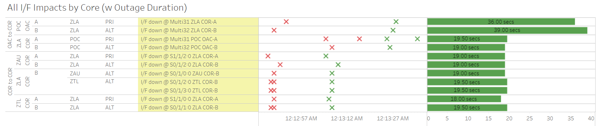

Weekly Highlights 20240214-20240221
2/15 - CM1 GUS RF Investigation -- FIXED
- 2/7 ~17:03 - CM1 GUS to Maintenance for
C5 KPA Leakageinvestigation; restored to Backup at 2/7 19:55 - 2/8 07:00 - GUS Switchover - S15 - BR1 to Backup / CM1 to Primary for continued monitoring of CM1 RF signal investigation (can only be checked in Primary Mode)
- 2/13 07:02 - GUS Switchover - S15
- BR1 to Primary / CM1 to Backup
to monitor carrierphase divergences after a switchover to Primary; ref LIR 747063624 - 2/15 07:04 - GUS Switchover - S15 - CM1 to Primary / BR1 to Backup to continue RF monitoring with CM1 in Primary -- if all is well, this will be complete the RF Investigation
2/15 - MMX Ring 2 Cleared
- 2/15 22:05 - MMX Ring 2 comms cleared! down since 5/11/23 17:01 (~24.2 million seconds)
- 2/21 15:17 - MMX ACS-B Router Reset due to 50% RG1 packets -- the Router Reset did not clear the issue
- Monitoring ongoing -- RG1 packets are running at 50% despite router and COR port reboots...
2/16 - ZLA and ZDC COR Comm Events
- 2/16 00:12 - Comm event at ZLA affecting COR-OAC and COR-COR comms for ~19 seconds

- 2/16 02:29 - Comm event at ZDC affecting COR-OAC and COR-COR comms for ~19 seconds

2/18 - MMD WRE-A Failed
- 2/16 14:28 - MMD WRE-A Faulted with SEs 29, 52, 53, and 59 indicating Freq Std; WRE-A needs Control Powered but PCU-A uses Ring 2...
- 2/18 13:29 - Reset MMD WRE-A to attempt to restore -- apparently did not return to Maintenance...
- 2/21 13:10 - Reset MMD WRE-A to attempt to restore -- apparently did not return to Maintenance...
- 2/21 16:09 - MMD Ring 1 comms down hard... may be related to MMD WRE-A troubleshooting
2/21 - CM1 Non-Intrusive Maintenance
- 2/21 07:05 - GUS Switchover - S15 - BR1 to Primary / CM1 GUS to Backup to support non-intrusive maintenance; ref LIR 701695232 (see TAP Sig Events)
2/21 - YQX WRE-B Control Power
- 2/21 15:42 - YQX WRE-B Control Power OFF / ON to address SE 30 Minor Alarm; ref LIR 751271924; restored to Normal at 2/21 16:23
Various Comm Impacts
* Does not include single-line impacts <30 seconds which do not cause an outage
CM1 Comm Events
- 2/14 09:05 - CM1 Ring 1 ALT / Ring 2 PRI + YFB Ring 2 comms down hard; all lines cleared at 2/14 09:30 (~1465 seconds)
- 2/15 19:06 - CM1 Ring 1 PRI / Ring 2 ALT comms took a ~30 second hit
AP1 Comm Events
- 2/16 17:17 - AP1 Ring 1 ALT / Ring 2 PRI comms took a ~19 second hit
- 2/17 05:01 - AP1 Ring 1 PRI / Ring 2 ALT comms took a ~30 second hit
- 2/17 14:49 - AP1 Ring 1 ALT / Ring 2 PRI comms took a ~36 second hit
- 2/17 18:31 - AP1 Ring 1 ALT / Ring 2 PRI comms down hard; both lines cleared at 2/17 18:34 (~176 seconds)
- 2/17 22:58 - AP1 Ring 1 ALT / Ring 2 PRI comms flapping; last event cleared at 2/18 03:48 (~723 seconds total)
- 2/19 16:37 - AP1 Ring 1 ALT / Ring 2 PRI comms down hard; both lines cleared at 2/19 16:40 (~153 seconds)
- 2/19 19:17 - AP1 Ring 1 ALT / Ring 2 PRI comms down hard; both lines cleared at 2/19 19:20 (~197 seconds)
- 2/20 06:25 - AP1 Ring 1 ALT / Ring 2 PRI comms flapping; last event cleared at 2/20 09:36 (~480 seconds)
Mexico Sites
- 2/15 00:41 - MSD Ring 1 comms down hard; line cleared at 2/15 00:44 (~180 seconds)
- 2/15 02:31 - MSD Ring 1 comms down and loopback initiated; ref LIR 748680524 for Verizon testing; line cleared at 2/15 03:51 (~4797 seconds)
- 2/16 01:46 - MMD Ring 1 comms down hard; line cleared at 2/16 02:38 (~3069 seconds)
- 2/16 02:06 - MSD Ring 1 comms down hard; line cleared at 2/16 08:06 (~21604 seconds)
- 2/16 06:11 - All Ring 1 MX comms down hard; all lines (except MSD) cleared at 2/16 06:17 (~350 seconds)
- 2/16 18:15 - All Mexico Ring 1 comms down hard; all lines cleared at 2/16 18:26 (~696 seconds)
- 2/19 19:33 - MSD Ring 1 comms down hard; line started flapping on return; last event cleared at 2/19 21:08 (~4335 seconds total)
Other Sites
- 2/19 21:32 - OTZ Ring 1 / Ring 2 comms down hard; both lines cleared at 2/19 21:34 (~68 seconds)
List of current offline WREs
List of current offline WREs -- ref WAAS Status Monitor
All Depot shipments to Mexico are halted until the customs process can be finalized
- MMD WRE-A - 2/16-... - Freq Std Fault -- DCP did not return to Maintenance Mode after reset
- MMX WRE-B - 10/2-... - PCU-B failed; need replacement but first need Maintainer Laptops for configuration
- MMX WRE-A - 9/27-... - PCU-A failed; need replacement but first need Maintainer Laptops for configuration
- MTP WRE-B - 7/21-... - PCU-B failing over and over again; input power tested good; disconnected power for other LRUs in WRE-B until PCU-B can be replaced; PCU-B has apparently been stable since 7/25 00:16 (no further power cycles on PCU)
5/11/23-... - MX Ring 2 Satcom Upgrade
MX WAAS Sites comm upgrades in progress:
- 2/15 - MMX Ring 2 successfully connected through Tijuana to ZLA COR-B!
- 11/2 - FTI has initiated coordination with Tijuana to install and test direct connection to Frequentis -- MMD Test on 12/6
- 10/27 - Frequentis has delivered to Tijuana, needs to be connected to FTI delivery
Further work needed at each WRS site to complete Ring 2 connection upgrades
FTI-Harris coordinating with SENEAM at TJX to complete end-to-end testing

Major Events